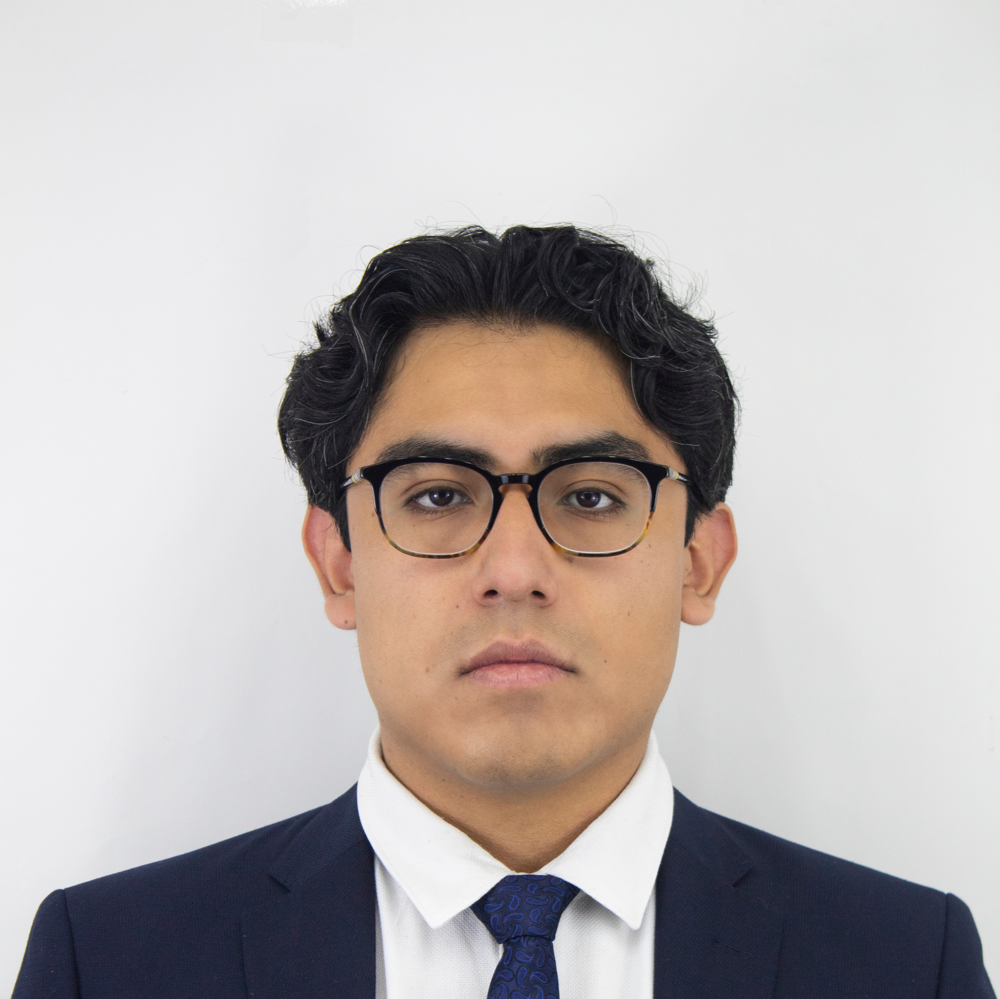

Ingeniero mecatrónico enfocado en el desarrollo de sistemas robóticos, con experiencia en integración de diseño mecánico y electrónico para aplicaciones en manufactura y tecnología. Participación en proyectos internacionales en Japón, Alemania, China y EE.UU.
Hands-on Mechatronic Engineer with +5 years of experience in the development of electromechanical systems and applied hardware. My work focuses on turning ideas into functional physical systems by integrating design, manufacturing, and validation within iterative development cycles. I take a practical, execution-driven approach to engineering, applying DFM principles and collaborating with manufacturing partners to refine designs for production — improving cost efficiency, build time, and overall product quality.
I have +4 years of experience designing parts for manufacturing across a range of materials for robotics applications. My experience includes developing components and assemblies in CAD, generating production drawings, and performing tolerance analysis to ensure proper fit and performance. I have worked on system validation through simulations and physical testing, as well as integrating mechanical systems with electronics and control.
I have led hardware development teams of more than 20 people, coordinating multidisciplinary efforts and ensuring strong technical execution. I focus on building solutions that perform reliably in real-world conditions, making engineering decisions that balance performance, cost, and manufacturability.
Diseño CAD de partes y ensambles complejos para manufactura, incluyendo plásticos y sistemas robóticos. Experiencia en iteración rápida desde concepto hasta hardware funcional mediante prototipado.
Desarrollo de hardware y PCBs para sistemas robóticos, integrando sensores, arneses de cableado y encapsulados electrónicos.
Desarrollo de software en Python, MATLAB y Java para control, simulación y sistemas embebidos.
Integración de sistemas mecánicos, electrónicos y de control, colaborando con equipos multidisciplinarios para validar soluciones en entornos reales.
Optimización de diseño para manufactura (DFM), trabajando con proveedores y procesos como CNC, impresión 3D y ensambles iniciales para reducir costo, tiempo y mejorar calidad.
Liderazgo técnico y comunicación efectiva para coordinar equipos multidisciplinarios y proveedores en el desarrollo de sistemas complejos.
Native Spanish · Technical English — reading, writing, and communication in engineering environments.
Haz click en "Ver más" para explorar cada proyecto en detalle.
Proyectos reales en industria, innovación y robótica — con impacto medible.
Resultados en competencias nacionales e internacionales.
México · Clasificación al All Japan Robot Sumo Tournament 2025, Tokio.
Schaeffler Irapuato · Replicado en Alemania y China.
Houston, EE.UU. · Equipo oficial de México.
Ciudad de México · Competencia nacional.
Abierto a oportunidades, colaboraciones y proyectos de innovación.
jonathancerv02@gmail.com